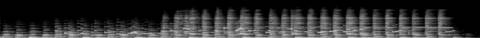
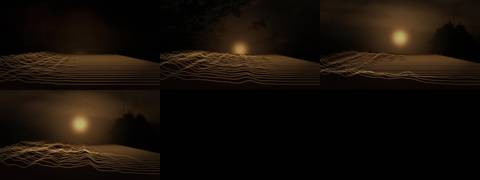

Afterlight / V Mosaic / AFL-18
V · Mosaic · AFL-18 of 21 · 1:20
Dawn Remembers Again
The note that produced it
On this track: Good overall, not very listenable.
“I want each to be a mosaic assemblage of the tracks, never the whole track. Each a separate video experiment to see the samples, get the groove. Aim for 1–2 minutes per track.”
“A different attempt and technology for each Afterlight song / music video experiment”: readable as embers from their spectrograms, as Gaussian splats of places.
What was made
Spectrogram terrain: each past moment of sound is a ridge further back, newest at the front, and an archive sun rises behind the ridges.
0:30–1:02 at half speed, an octave down · five swells with twelve-second tails
What came back
The note on this version, which produced AFL-19 Thus the Picture Is Reassembled:
Many nice moments and samples to find.
Images made while working: contact sheets, check frames, spectrograms, the stills compared before and after a fix. Tap one to see it full size.





No separate critic agent was run on this cut. The critique came from the director, in the notes on either side of it.
On the cut before
Good overall, not very listenable.
On this cut
Many nice moments and samples to find.
Sample map
Every sound placed in the 1:20 study, 13 events by layer, coloured by the track it was cut from. The bars under the map are the whole source tracks; the lit spans are the parts actually used (approximate: stretched and frozen samples are counted by where they start).
The recipe
The function that composed this study, exactly as it ran.
def dawn():
"""made listenable by slowing it: the swells at half speed and an octave down, smeared, with the bright moments let through"""
n = 'dawn'; m = Mix(80)
slow = resample(cut(n, 30, 62), 0.5) # 32 s -> 64 s, an octave lower
slow = lp(slow, 5000) * np.minimum(np.linspace(0, 1, len(slow)) * 4, 1)[:, None]
m.put('slow', slow, 2, 0.8, n, 30, 'halfspeed')
m.put('freeze', freeze(cut(n, 12, 16), 30, grain=0.4, dens=16), 0, 0.5, n, 12, 'freeze')
P = 2.564
for k, a in enumerate([33.2, 45.0, 55.5, 70.4, 82.0]):
a = snap(n, a); x = cut(n, a, a + P)
m.put('swell', x, 12 + k * 12.5, 0.7, n, a, 'swell'); m.put('ember', ember(x, 12, 0.6), 12 + k * 12.5, 1.0, n, a, 'tail')
m.put('ember', ember(cut(n, 86, 92), 18, 0.7), 66, 1.0, n, 86, 'tail')
return mThe picture technique
class Terrain:
"""the mosaic's spectrum laid out as land: each past moment a ridge further away, the newest at the front; a sun from the archive rises behind it"""
def __init__(s, ctx, cats=('sun',), seed=6):
s.c = ctx; s.sky = [clip_frames(i, 320, 180, 12, 8) for i in footage(cats, 3, seed)]; s.emb = Embers(15000, 8)
def frame(s, t, dt):
c = s.c; rise = sm(0, c.dur * 0.8, t)
sk = s.sky[int(t / 25) % len(s.sky)]; f = up(sk[int(t * 12) % len(sk)].astype(np.float32))
grad = np.clip(1 - YY / (H * 0.62), 0, 1)[..., None]
img = (f * np.array([1.0, 0.7, 0.45]) * 0.35 * (0.3 + 0.7 * rise)) * grad
sy = H * (0.70 - 0.32 * rise); img += (np.exp(-((XX - W * 0.5) ** 2 + (YY - sy) ** 2) / 2600) * 1.4 + np.exp(-((XX - W * 0.5) ** 2 + (YY - sy) ** 2) / 60000) * 0.35)[..., None] * np.array([1.0, 0.62, 0.3]) * (0.3 + 0.7 * rise)
canvas = (img * 255).clip(0, 255).astype(np.uint8).copy()
glow = np.zeros((H, W), np.float32)
R = 46; xs = np.linspace(-0.2, 1.2, 128)
for i in range(R - 1, -1, -1): # back to front
tt = t - i * 0.18
if tt < 0: continue
col = c.melcol(tt); d = 1 + i * 0.09; base = H * 0.52 + 300 / d
hts = (gaussian_filter(col, 1.2) ** 1.8) * 260 / d
px = (W / 2 + (xs - 0.5) * W * 1.6 / d).astype(np.int32); py = (base - hts).astype(np.int32)
pts = np.concatenate([np.stack([px, py], 1), [[px[-1], H], [px[0], H]]]).astype(np.int32)
shade = int(8 + 10 * (1 - i / R))
cv2.fillPoly(canvas, [pts], (shade, shade // 2, shade // 3))
cv2.polylines(glow, [np.stack([px, py], 1).reshape(-1, 1, 2)], False, float(1.2 * (1 - i / R) ** 1.5 + 0.05), 1, cv2.LINE_AA)
if i == 0:
pk = np.nonzero((col > 0.75) & (np.r_[0, np.diff(col)] > 0))[0]
if len(pk): s.emb.emit(px[pk].astype(np.float32), py[pk].astype(np.float32), vx=10, vy=-50, T=0.9, life=3.0, spread=15)
img = canvas.astype(np.float32) / 255
g = glow + gaussian_filter(glow, 2) * 1.5
img += g[..., None] * thermal(np.full(1, 0.7))[0]
s.emb.step(t, dt, wind=(20, -15)); img += s.emb.draw(t, 0.8)
return imgFiles
The scripts that made this version, as plain text.
- compose.py254 linesthe nine mosaics: every cut, loop and freeze
- sampler.py154 linesloop, stretch, reverb, echo, freeze, tape stop
- mix.py85 linesthe 178-second set
- sound_design.py91 linesneedle drop, inhales, risers, sub, tape bus
- engines.py367 linesthe ten picture techniques
- vis_common.py106 linesshared embers, archive frames, the finish
- render.py41 linesrenders frames and encodes
- analyze.py21 linestempo and onsets of each source track
A film concept by Sosuke & Watson · CRASH LAB · PAELEO · CINEOSIS LAB